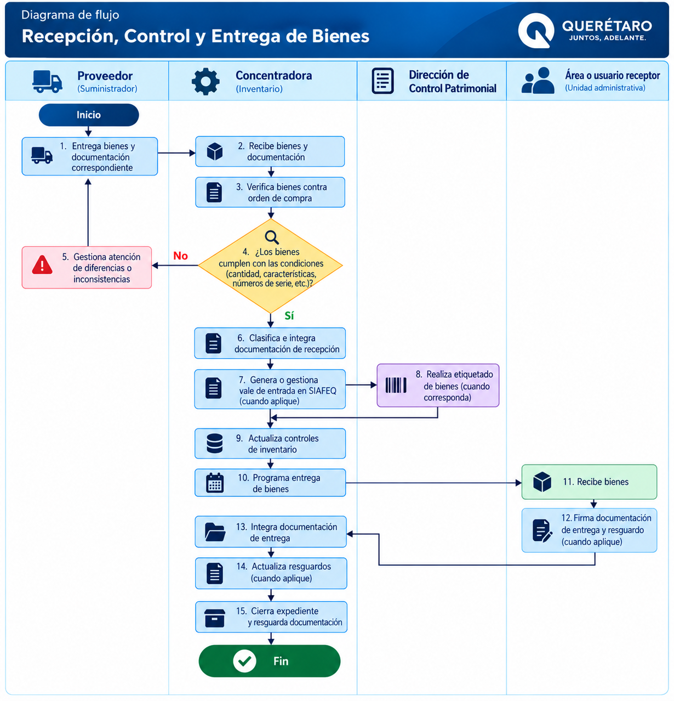

Recepción, Control y Entrega de Bienes
Procedimiento para recibir, verificar, controlar, registrar y entregar los bienes gestionados por la Concentradora, manteniendo la trazabilidad de su recepción y destino.
Objetivo
Establecer las actividades necesarias para recibir, verificar, controlar, registrar y entregar los bienes gestionados por la Concentradora, manteniendo la trazabilidad de su recepción y destino.
Participantes
Requisitos para iniciar
Para iniciar la recepción deberán encontrarse disponibles los documentos e información correspondientes a los bienes adquiridos.
Orden de compra o documento correspondiente.
Información necesaria para coordinar y documentar la entrega.
Documentación asociada a la entrega de los bienes.
Relación correspondiente a los bienes adquiridos.
Información necesaria para identificar los bienes.
Procedimiento
Secuencia para la recepción, control, registro y entrega de bienes.
Coordinación con proveedor
Se establece comunicación con el proveedor para coordinar la recepción de los bienes.
Programación de entrega
Se programa la fecha y condiciones de entrega.
Recepción de bienes
El proveedor presenta los bienes y documentación correspondiente.
Cotejo documental
El personal responsable coteja los bienes recibidos contra la orden de compra y demás documentación aplicable.
Verificación física
Se verifica físicamente la cantidad y características de los bienes.
Registro de números de serie
Cuando corresponda, se identifican y registran los números de serie.
¿Existen inconsistencias?
Si se detectan diferencias, faltantes o inconsistencias, se documenta la situación y se gestiona su atención con el proveedor o área correspondiente.
Punto de validaciónClasificación de bienes
Cuando la recepción resulte procedente, los bienes son clasificados de acuerdo con la información de la adquisición.
Integración documental
Se integra la documentación correspondiente a la recepción.
Vale de entrada en SIAFEQ
Cuando aplique, se genera o gestiona el vale de entrada en SIAFEQ.
Etiquetado patrimonial
Se coordina con la Dirección de Control Patrimonial el proceso correspondiente para el etiquetado de los bienes sujetos a control patrimonial.
Identificación de bienes
Los bienes son identificados conforme al control aplicable.
Actualización del inventario
Se actualizan los registros internos de inventario.
Control de bienes
Los bienes permanecen bajo control hasta su entrega.
Programación de entrega
Se programa la entrega al área o usuario correspondiente.
Entrega del bien
Se realiza la entrega y se integra la evidencia documental respectiva.
Resguardo
Cuando corresponda, se gestiona o actualiza el resguardo del bien.
Validaciones
La intervención de la Concentradora en materia de inventario deberá distinguirse de las atribuciones correspondientes a la Dirección de Control Patrimonial.
Resultado esperado
Bienes recibidos, verificados, identificados, controlados y entregados conforme a la documentación correspondiente, manteniendo evidencia de su recepción y destino.
Registros y evidencias
Diagrama de flujo
Recepción, Control y Entrega de Bienes

Selecciona el diagrama para visualizarlo en tamaño completo.